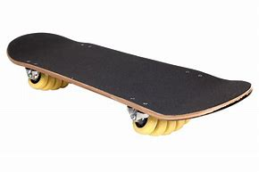

Los tipos de skates

El flowboard
Flowboard: La tabla es similar a la de un skate normal pero…. ¡tiene 14 ruedas! Sí, has oído bien, nada más y nada menos que 14 ruedas, repartidas entre los dos ejes delantero y trasero.
Estos skates fueron diseñados para funcionar como tablas de snowboarding pero sobre asfalto, pero al final se adaptaron al estilo skate. Si eres un amante del snow tienes que probar una tabla de éstas.
Podríamos decir que es una variante del flowboard y del freeboard, así que si te gusta el snow tendrás que decidirte entre una de éstas tres.